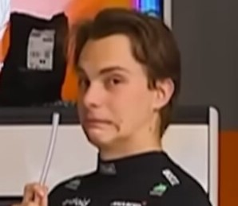

McLaren

McLaren Racing
CEO: Zak Brown
Team Principle: Andrea Stella
Drivers: Oscar Piastri, Lando Norris
Car: MCL-39
Reserve Drivers: Pato O'Ward
Academy Drivers: Ella Lloyd, Alex Dunne, Ugo Ugochukwu, Martinius Stenshorne, Brando Badoer
Oscar Piastri
Piastri is a rising star in Formula 1, he joined the sport and team in 2023 and won the Qatar sprint race in his first season. In 2024, he won his first race in Hungary and a second in Azerbaijan and he helped the team secure its first WCC for 26 years. This year he has 4 wins and is leading the championship.
Race Engineer: Tom Stallard
Lando Norris
Norris joined the sport and team in 2019 as a teamate to Carlos Sainz then Daniel Riccardo then Piastri. He got his first win at the Miami Grand Prix in 2024 and won 3 more races that season in Zanvort, Singapore and Abu Dhabi also helping secure the WCC. This year he has 1 race win and 1 sprint win and he is currently second in the championship.
Race Engineer: Will Joseph